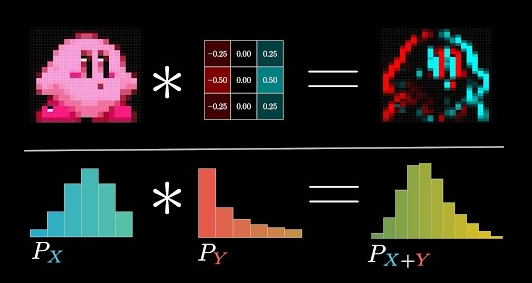

Learn CNNs
Contents
Learn CNNs#
Self-serve learning at your own pace with great videos.
Important
Before the guest lecture, please watch at least:
One of the videos in the Section “Essentials”
One of the videos in the Section “How it works”
After watching the videos, you should be able to answers the questions below. Read them carefully now as they shall provide a guide on what to pay attention to.
Guiding Questions#
General questions#
What are the motivations of CNN?
Why are they ideal for image processing? (3 points)
What is a convolutional layer?
What are the fundamental components of a convolutional neural network (CNN) in terms of its architecture?
Detailed questions#
What is a filter?
What is a kernel?
How are weights represented in a CNN?
What is a feature map?
What does pooling do?
What does padding do?
Warm-up (optional)#
Refresh your knowledge about convolution with the wonderful animations from the math YouTube channel 3Blue1Brown. The part relevant for this course is from the start until 14 minutes 40.
{kind=link}
Essentials#
Working through a small example with StatQuest (preferred)#
In this video, Josh Starmer from StatQuest walks through a simple example of CNN classifying between a O or X image symbol. The main ideas behind filters and pooling are highlighted. You will see that Josh likes to sing and says “bam” a lot.
Video: Image Classification with Convolutional Neural Networks, StatQuest

Feature extractions, Deeplizard#
This video shows the roles of filters for feature extraction. It also shows an example of a convolution implemented in an spreadsheet.
Video: Convolutional Neural Networks explained, Deeplizard

How CNNs work#
Stanford Lecture 5 | Convolutional Neural Networks#
Stanford University School of Engineering offers a series of lectures. In Lecture 5, Serena Yeung put emphasis on the layer dimensions before and after each operation. Pause the video and try to answer first before the answer is revealed!
From start to minute 14:00 \(\rightarrow\) Review on history and applications
From minute 14:00 onward \(\rightarrow\) How CNNs work
Video: Lecture 5 | Convolutional Neural Networks, Stanford University

The Math of Intelligence | CNN by Siraj Raval#
This video presents the big blocks of CNNs, then the role of each layer.
What I like
Siraj defines most of the jargon: depth, pooling, dropout. Big bonus: from minute 32 there is a guided visit of a CNN coded in python from scratch, without any of libraries such as Keras, PyTorch or TensorFlow.
What I dislike
The use of the workd “magic” … There is no magic, it’s all about math!
Video: Convolutional Neural Networks - The Math of Intelligence, Siraj Raval

If you are curious (optional)#
More links below for those eager to convolve themselves with the joys of CNNs.
The AlexNet breakthrough#
AlexNet is a deep convolutional neural network (CNN) introduced by Alex Krizhevsky, Ilya Sutskever, and Geoffrey E. Hinton in their paper “ImageNet Classification with Deep Convolutional Neural Networks” in 2012. The network achieved a top-5 test error rate of 15.3% on the ImageNet dataset, which was a significant improvement over the previous state-of-the-art at the time. The success of AlexNet marked the beginning of the deep learning revolution in the field of computer vision.
Learn more about the architecture and features of AlexNet on the website www.paperwithcode.com, where you can also access an implementation of the network with PyTorch. The code is surprisingly short; 216 lines!
Stanford Lecture 9 | CNN Architectures#
In Stanford Lecture 9, Serena Yeung reviews the architectures of the ImageNet winners: AlexNet, VGG, GoogLeNet, and ResNet. It is an advanced topic and you may need to pause the video and do additional research to understand the technical terms used. It is recommended to first read the AlexNet paper linked above to familiarize yourself with the terminology, concepts and architecture illustrations. After watching this video, you will have a comprehensive knowledge of the various CNN architectures and their successes in the field of computer vision.
Video: Lecture 9 | CNN Architectures, Stanford University

CNN with Keras and TensorFlow - Live code! By sentdex#
If you want to see a CNN implemented live on a Jupyter Notebook in front of your eyes: this is the video! The code starts at minute 6:00 (before sentdex gives a brief review).
Video: CNN - Deep Learning basics with Python, TensorFlow and Keras, sentdex

Note
A live Q&A session with Dr. Nachman will be organized following his lecture, likely in the evening, due to the time difference. You will be notified.